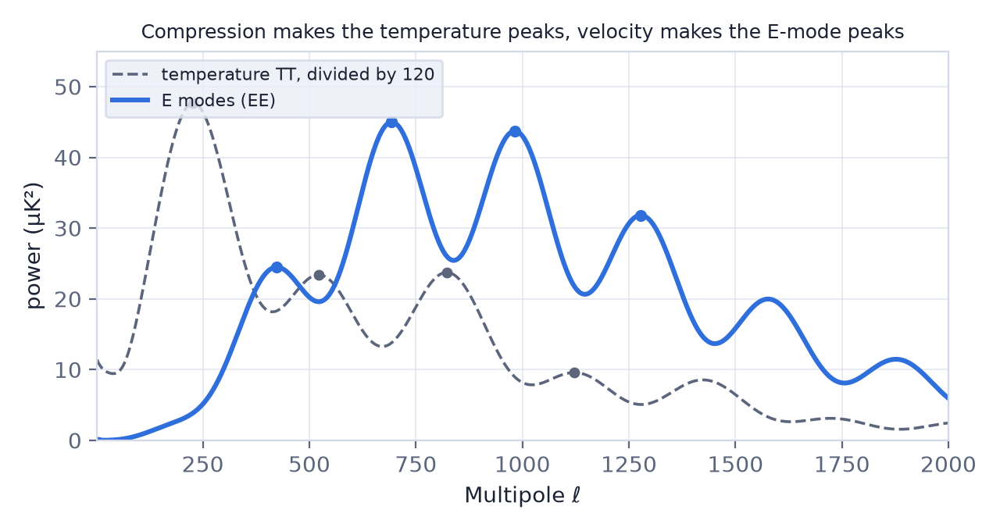
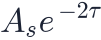
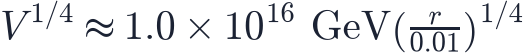
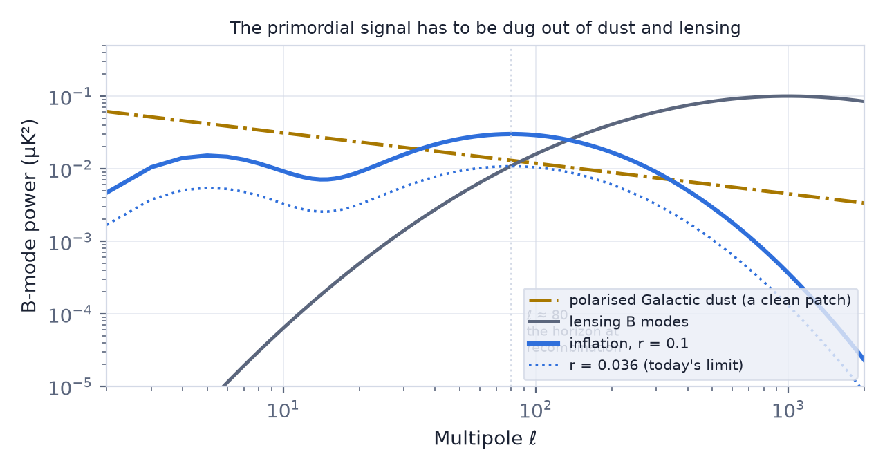

In this lesson you will learn
|
A second layer of information
Everything in L5.1 came from one number per direction on the sky: the temperature. But the microwave background carries a second, much fainter signal. A few percent of it is linearly polarised — the electric field of the wave prefers one direction over the other — at the level of a few μK against the 100 μK of the temperature ripples.
That signal is not a bonus. It comes from a different moment and a different physical quantity than the temperature does, and it is what turned the CMB from a strong measurement into an overdetermined one.
Why scattering polarises anything
Thomson scattering — a photon bouncing off a free electron — is the whole mechanism, and it has one crucial property: it only polarises light if the radiation arriving at the electron is anisotropic in a particular way.
Picture an electron in the plasma just before decoupling. Light arrives from every direction. If the incoming intensity is the same all round (a monopole), the scattered light is unpolarised: the preferences from opposite sides cancel. If one side is hotter than the other (a dipole), they still cancel. Only if the radiation is hotter along one axis and colder along the perpendicular one — a quadrupole — does a net polarisation survive.
It takes a quadrupole A monopole gives nothing. A dipole gives nothing. Polarisation is made by the quadrupole of the radiation field, and nothing else. |
And where does the quadrupole come from? From the velocity of the plasma. An electron flowing through the photon bath sees the radiation blueshifted ahead and redshifted behind; in the plasma's own frame, the flow gradients produce exactly the quadrupole needed. The temperature spectrum is built mostly from the compression of the plasma; the polarisation comes from its motion.
That single fact has an immediate, testable consequence.
The peaks interleave Compression and velocity are a quarter-cycle out of phase, like the position and the speed of a pendulum. So the E-mode peaks fall where the temperature peaks do not. Finding them there, exactly where the model said, was one of the strongest confirmations the acoustic picture ever received. |

There is a second consequence. Polarisation is only generated while the plasma is actually decoupling, which lasts a short time. On angular scales much larger than the thickness of the last-scattering surface, the electron simply does not have time to see a quadrupole. That is why the polarisation signal dies away towards small ℓ, while the temperature has its Sachs–Wolfe plateau there.
Try it: CMB Power Spectrum Explorer Watch the interleaving. Open the E modes and TE tab. The dashed grey curve is the temperature spectrum divided by 120. Every E-mode peak sits in a temperature trough. |
E modes and B modes
A polarisation field is not a number on the sky; at every point it is a direction and a strength — a headless vector. Such a field can be split, uniquely and without reference to any coordinate system, into two parts:
- E modes — patterns with no handedness, whose polarisation directions point radially towards or tangentially around a hot or cold spot. Think of the field lines around a charge, which is where the name comes from.
- B modes — patterns with a curl, swirling clockwise or anticlockwise around a spot, like a magnetic field around a wire.
The split matters because of a theorem:
Density ripples cannot make B modes A scalar perturbation — a density ripple, the thing that makes all the structure in the universe — produces a velocity field that is a pure gradient. The polarisation pattern it generates has no curl at all. At the last-scattering surface, scalar perturbations produce E modes and nothing else. |
So a B mode is either not primordial, or not scalar. Both possibilities are interesting, and they are the rest of this lesson.
The reionisation bump
Look at the E-mode spectrum below ℓ ≈ 10 and there is a separate bump, at completely the wrong place to be an acoustic peak. It comes from a completely different epoch.
When the first stars reionised the universe (L6.4), they filled space with free electrons again, and a few percent of CMB photons scattered one more time on their way to us. That late scattering polarises them at the angular scale of the horizon at reionisation — which is large, hence small ℓ.
The height of that bump measures the optical depth τ, which is
essentially the total number of electrons the photons met. It is the only clean way
to measure τ, and it matters far beyond reionisation, because the acoustic peaks are
damped by a factor  . Without an independent τ, the amplitude of the
primordial fluctuations and the optical depth are hopelessly entangled: the
combination
. Without an independent τ, the amplitude of the
primordial fluctuations and the optical depth are hopelessly entangled: the
combination

is measured superbly, and neither alone.Why σ8 needed a satellite τ feeds straight into σ8, the amplitude of matter clustering today. WMAP's first estimate of τ was 0.17; Planck's polarisation brought it down to 0.054. That single correction moved σ8 by several percent — which is why the S8 tension of L6.6 could only be argued about after the low-ℓ polarisation was measured properly. |
Try it: CMB Power Spectrum Explorer The bump and the damping. Raise τ from 0.056 towards 0.09 and watch two things at once: the bump at ℓ ≈ 5 grows as τ², and the acoustic peaks shrink as e^(−2τ). |
Lensing: B modes we make ourselves
Between us and the last-scattering surface lie 13.8 billion years of matter, and it bends light (L5.6). Each CMB photon is deflected by a couple of arcminutes, with deflections correlated across a degree or so.
Lensing does not create polarisation. It moves it — and in doing so it shears the E-mode pattern. A sheared gradient is no longer a pure gradient, so a small part of the E-mode power is converted into B modes. The result is a smooth B-mode spectrum peaking near ℓ ≈ 1000, first detected by SPTpol in 2013 and now measured well.
This is a signal in its own right, not merely a nuisance:
- It is sourced by all the matter along the line of sight, so it maps the total mass distribution with no galaxies involved.
- Its amplitude measures how much structure has grown, which constrains σ8 and — as in L4.7 — the sum of the neutrino masses.
- It smooths the acoustic peaks slightly, an effect that shows up in the temperature spectrum as well.
Primordial B modes: the prize
The other way to make a B mode is with a tensor perturbation — a gravitational wave. Inflation (L6.3) stretches the quantum fluctuations of spacetime itself into a background of long-wavelength gravitational waves, and those waves distort space at last scattering in a way that has a handedness. They make E modes and B modes in comparable amounts.
Their strength is written as the tensor-to-scalar ratio r, and it is a direct measure of the energy scale at which inflation happened:

A detection would be a measurement of physics at GeV — a trillion times beyond the LHC — and evidence that gravity is quantised, since the waves began as zero-point fluctuations of the gravitational field.
The signal peaks at ℓ ≈ 80, the horizon size at recombination, with a second bump at ℓ ≈ 5 from reionisation.

BICEP2, and the dust In March 2014 the BICEP2 collaboration announced a B-mode detection at ℓ ≈ 80 corresponding to r ≈ 0.2, and it was reported worldwide as the discovery of inflation. Within months it became clear that the patch of sky they observed contains more polarised dust than assumed: spinning, magnetically aligned grains in our own Galaxy that emit polarised microwaves with B modes of their own. A joint analysis with Planck, which had the extra frequencies needed to separate dust from the CMB, showed the signal was consistent with dust alone. The current limit is r < 0.036. |
Try it: CMB Power Spectrum Explorer Why BICEP2 was fooled. Open the B modes tab. With the default dust level, raise r until the primordial curve rises above dust plus lensing at ℓ = 80. It takes r ≈ 0.08 — which is why a claim of r = 0.2 looked so convincing, and why it needed a second frequency to test. |
What it takes to go further
Three obstacles, and what is being done about each:
- Foregrounds. Dust dominates above about 100 GHz and synchrotron emission below about 40 GHz. The answer is many frequency bands: the Simons Observatory, LiteBIRD and CMB-S4 all observe across a wide range specifically to separate them.
- Lensing B modes. They are a genuine CMB signal and cannot be avoided by observing elsewhere. They can, however, be delensed: measure the matter distribution well enough — from the CMB lensing reconstruction itself, or from a galaxy survey — predict the lensing B modes and subtract them. Removing 90% is the working target.
- Sheer sensitivity. Reaching r ≈ 0.001 needs hundreds of thousands of detectors observing for years. CMB-S4 is designed for exactly that.
What a non-detection would mean If r is below about 0.001, the simplest large-field inflation models are excluded — which is real information, not a failure. But no measurement can ever prove r = 0, so the question does not close, it narrows. |
Remember this
|